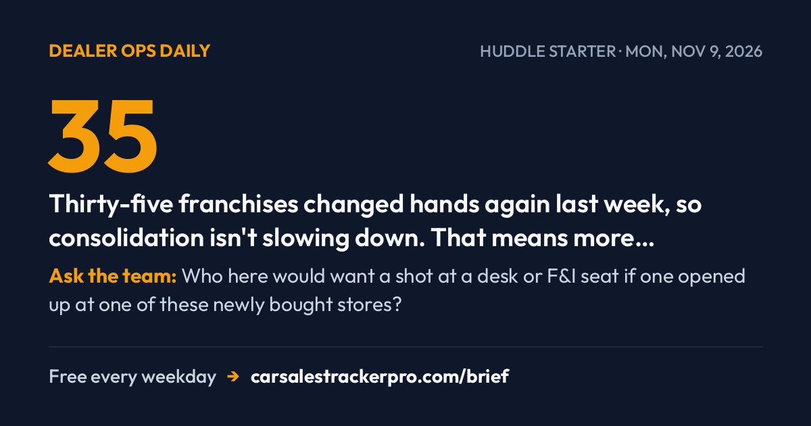

Tennessee Blocks Scout, Buy-Sell Pace Keeps Climbing


Tennessee just reminded automakers that franchise law isn't going anywhere — a win for every store still selling the old-fashioned way. Buy-sell activity didn't slow down either, with 35 more franchises changing hands this week.
☕ HUDDLE STARTER · read it aloud in 60 seconds
35 — Thirty-five franchises changed hands again last week, so consolidation isn't slowing down. That means more multi-store groups are out there looking for desk and F&I talent right now.
Ask the team: Who here would want a shot at a desk or F&I seat if one opened up at one of these newly bought stores?
⚖️ Protect the deal
Tennessee Blocks Scout's Direct-Sales Plan
Tennessee regulators denied Scout Motors a dealer license, blocking its plan to sell electric trucks directly to consumers in the state, according to Automotive News (Nov. 6, 2026); the ruling has not been independently verified beyond that report. Franchise-law challenges like this have stalled several automakers' direct-to-consumer launches this year.
Use it today: If an up asks why they can't buy straight from the factory like Tesla, point to Tennessee — franchise law still protects your store's exclusive territory and your commission on that sale.
Sources: Automotive News
💰 The desk & the box
Your Pay Plan Might Be Killing the Products You Sell
F&I pay plans often reward only the products that close fastest, quietly burying slower-selling but profitable add-ons, according to AutoSuccess (Nov. 6, 2026); the analysis has not been independently verified. The piece argues menu order and commission structure — not product quality — decide what actually gets pitched to the customer.
Use it today: Ask your F&I manager which product on the menu has the best customer retention, not just the fastest close — that's the one worth learning to sell first if you're angling for the box.
Sources: AutoSuccess
🚗 Market numbers
Skip the OBD-II Scan, Eat the Recon Bill Later
A growing number of appraisers now run OBD-II diagnostic scans on every trade-in before writing a number, according to AutoSuccess (Nov. 7, 2026); the practice is not yet standard industry-wide. Scans can surface hidden fault codes — transmission, emissions, airbag — that turn a clean-looking trade into an expensive recon job.
Use it today: Before you commit to an appraisal number out loud, ask your used-car manager if the trade's been scanned yet — a five-minute check can save your deal from a reconditioning surprise that eats the gross.
Sources: AutoSuccess
🏬 The floor
Most Dealers Use AI Now — Few Have Locked the Door Behind It
This year's CDK survey found most dealerships now use AI somewhere in their operations, but few have built cybersecurity guardrails against AI-enabled attacks, according to Auto Dealer Today (Nov. 6, 2026). The gap leaves customer and deal data exposed even as stores lean harder on AI tools for BDC and desking.
Use it today: If your store uses an AI chat tool or desking assistant, ask your IT lead or GM who owns its security — if nobody has an answer, that's your opening to flag it before a breach does.
Sources: Auto Dealer Today
35 Franchises Changed Hands Last Week — Buy-Sell Pace Isn't Slowing
Five Chevrolet dealerships sold and 35 total franchises changed ownership in the latest weekly tally, according to Automotive News (Nov. 6, 2026); the count has not been independently verified beyond that report. Consolidation keeps moving fast, meaning more multi-rooftop groups are absorbing standalone stores across the country.
Use it today: If your store is part of a group that's been acquiring, ask your GM what's next on the radar — new rooftops often mean new desk and F&I openings before they're ever posted.
Sources: Automotive News
If this saved you five minutes before the morning meeting, forward it to someone else on your floor.
Commission calculator
Estimate this month's check from units, gross, pack and minis.
ComparisonPay plan comparison
Put two plans side by side under the same month.
Free trackerTrack every deal
Log each car and watch your month-to-date pay climb.